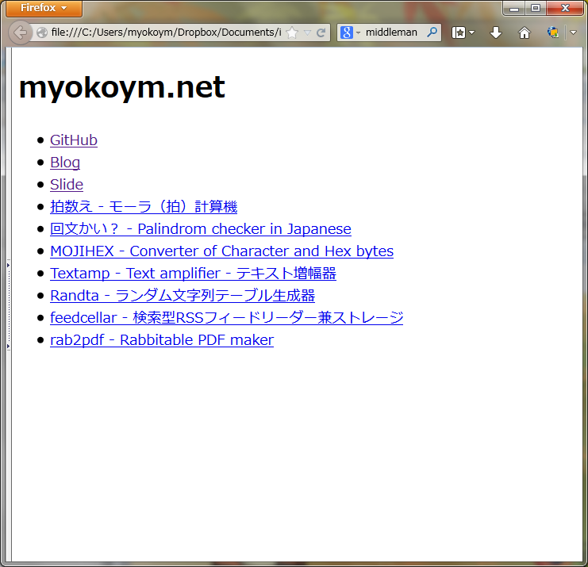
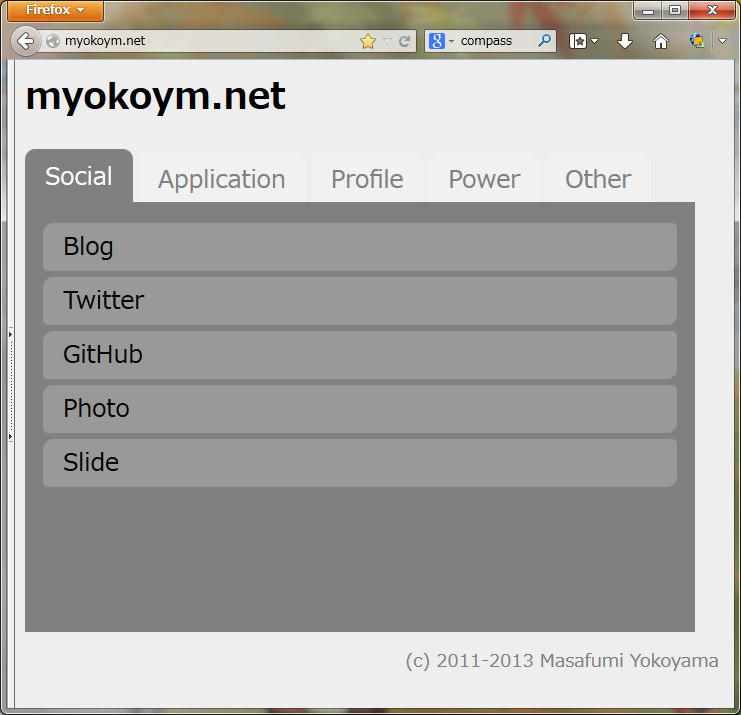

2013-10-09
myokoym.netをMiddlemanでリニューアルしました
@tricknotes 先輩がおすすめしていた
Middleman
を使ってみたかったので、
ちょうどレガシーだった myokoym.net
をリニューアルしました。
ビフォー・アフター
古き良きタグ打ち感漂う旧ページ

シンプル過ぎるほどシンプルです。これはこれで嫌いではないのですが、
間違えてとなりのリンクをクリックしてしまうことが多いため、
デザインだけでなく実用性の面でも改善する必要がありました。
モダンな雰囲気を醸し出す新ページ

いい機会なので、デザイン性と実用性の両面での改善を目指しました。
（スクリーンショットは、一番うまく表示されたWindowsのFirefox 24.0で取得しました）
生のCSSは書く気にならなかったのですが、Middlemanのおかげで
簡単にSCSSを使うことができたのが大きく、ほぼ想定通り実装できました。
タブ形式のデザインを採用
文字やクリック領域を大きくしつつ、
スクロールやページ遷移のストレスを減らすため、
タブ形式のデザインを採用しました。
JavaScriptをまったく使わずにCSSのみで実装しています。
以下のページを参考にさせていただきました。
jQueryを使わずCSSだけで出来るタブコンテンツ【レスポンシブ対応】 | コロンブスの卵
スマホは2/5タブのみ対応
スマホ（愛機京セラURBANO）
で確認したところ、タブが２つしか表示されなかったので、
左右にスクロールできないか検討中です。
ブラウザによっては、タブもあやしい動きをします。
ソースコード
CSSはもっと修正しやすく書けるような気がしています。
https://github.com/myokoym/myokoym.net
ちなみに、現在のデプロイ手順は middleman build からの scp -r
からの cp -rp です。